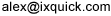

Sökmotorn Ixquick först ut att tilldelas sigillet "European Privacy Seal"
PRESSMEDDELANDE Europeiska datatillsynsmannen Peter Hustinx delade i dag ut det första ”European Privacy Seal” till sökmotorn Ixquick (www.ixquick.com). Ixquick är därmed den första sökmotorn som blivit formellt godkänd av EU. Sigillet European Privacy Seal garanterar att IKT-produkter och IKT-baserade tjänster följer EU:s krävande lagar och regler rörande integritet och datasäkerhet. Sigillet delas ut av EuroPriSe, ett konsortium bestående av nio integritetsorganisationer med stöd av Europeiska kommissionen. Integriteten på Internet utsätts för allt större hot eftersom sökningar och besök rutinmässigt registreras och kombineras till personlighets- och beteendeprofiler av sökmotorer och andra webbplatser. Tänkbara följder av dessa integritetskränkningar är missbruk av personuppgifter, identitetsstöld, trakasserier eller till och med kriminell användning. Detta fick sökmotorn Ixquick att 2006 bli först ut med att radera personliga uppgifter som IP-adresser inom 48 timmar och avskaffa användningen av s.k. cookies. Ixquick lämnar inte ut några personliga uppgifter om sina användare till tredje part. "Den här certifieringen ger väldigt starka signaler till våra användare", säger Ixquicks vd Robert Beens. "Det är det yttersta beviset på att vi håller vad vi lovar. Om folk söker med Ixquick får de de bästa resultaten – och fullständig integritet." "The European Privacy Seal fosters compliance with the European Data Protection regulatory framework and makes privacy-friendly IT products and IT-based services visible for business customers and consumers. The awarding of the first European Privacy Seal to the meta-search engine Ixquick marks an important milestone to implement privacy on the World Wide Web and highlights this privacy-friendly service." underlined Peter Hustinx, European Data Protection Supervisor. "The European Commission welcomes the set-up of a uniform European Privacy Seal certification scheme based on the high European Privacy Standards. Customers and enterprises benefit from easy identification of an IT product as ensuring or enhancing European Data Protection rules in the processing of data. The award of the first European Privacy Seal to the meta-search engine Ixquick underlines that a balance between the open nature of the internet, providers' interests and the protection of personal data of internet users is possible." said EU Commissioner Viviane Reding in a statement delivered today on occasion of the awarding of the first European Privacy Seal. "Med den här certifieringen införs öppna förfaranden under överinseende av oberoende myndigheter, och det är den officiella integritetsgarantin för konsumenter och företag", säger Thilo Weichert, tysk dataskyddsombudsman och ansvarig för Europrise. "Vi använder en metod i två steg: en utvärdering av produkten eller tjänsten av ackrediterade experter inom juridik och it-säkerhet, och en dubbelkontroll av utvärderingen av EuroPriSe som agerar som certifieringsorgan". I april 2008 publicerade EU:s arbetsgrupp för skydd av enskilda med avseende på behandlingen av personuppgifter tydliga rekommendationer för sökmotorer och uppmanade dem att kraftigt minska den tid de lagrar uppgifter, närmare bestämt till sex månader. "Ixquick har uppfyllt alla EU:s krav. Vi raderar personliga uppgifter inom 48 timmar och vi är nu den första sökmotorn som är godkänd av EU", säger Ixquicks vd Robert Beens. "Det här kommer definitivt att sätta fart på diskussionerna mellan EU och de större sökmotorerna eftersom detta att vi blivit godkända av EU motsäger påståenden om att EU:s rekommendationer är orealistiska eller inte går att följa." European Privacy Seal har utvecklats genom ett nära samarbete med integritets- och dataskyddsmyndigheter i Europa och väntas bli ett viktigt instrument både inom EU-lagstiftningen och för nationella integritets- och dataskyddslagar. Ixquick är en internationell sökmotor med en branschledande integritetspolicy. Mer information om European Privacy Seal finns på https://www.european-privacy-seal.eu/ws/EPS-en/Fact-sheet För pressfrågor vänligen kontakta:
Bryssel/Kiel/Zeist 14 juli 2008
Ixquick lanserades på Internet 1998 och ägs av det nederländska företaget Surfboard Holding BV.
Certifieringsexperterna har varit Borking Consultancy (juridik) och Certified Secure (it-säkerhet) från Nederländerna.
Mer information om Ixquick finns på www.ixquick.com.
Alex van Eesteren, affärsutveckling och media
+31 30 6971778
